# Carrega pacotes necessários
library(tidyverse); library(haven)
# Importa o banco de dados do tipo .sav, utilizado pelo programa SPSS
saq_df <- haven::read_sav(file = "aulas/aula_5_estatistica_descritiva/data/SAQ_mod.sav")Aula 5 - Estatística descritiva
Introdução
A estatística descritiva é uma parte da estatística que se dedica a organizar, descrever, resumir e apresentar os dados coletados. Essa abordagem não busca fazer inferências ou previsões sobre um grupo maior, mas apenas descrever o grupo específico que foi observado. Para os exemplos dessa aula, utilizaremos o banco de dados disponibilizado por Andy Field, que contém respostas de 2.571 indivíduos sobre as perguntas do “R Anxiety Questionnaire (RAQ-23)”1:
- A estatística me faz chorar
- Meus amigos vão pensar que sou estúpido por não conseguir lidar com o R
- Desvios padrão me animam
- Sonho que Pearson está me atacando com coeficientes de correlação
- Eu não entendo estatística
- Tenho pouca experiência com computadores
- Todos os computadores me odeiam
- Nunca fui bom em matemática
- Meus amigos são melhores em estatística do que eu
- Computadores são úteis apenas para jogar jogos
- Fui mal em matemática na escola
- As pessoas tentam dizer que o R torna a estatística mais fácil de entender, mas não torna
- Tenho medo de causar danos irreparáveis por causa da minha incompetência com computadores
- Computadores têm mente própria e deliberadamente dão errado sempre que os uso
- Computadores estão atrás de mim
- Choro abertamente ao ouvir falar de tendência central
- Entro em coma sempre que vejo uma equação
- O R sempre trava quando tento usá-lo
- Todo mundo olha para mim quando uso o R
- Não consigo dormir pensando em vetores próprios (eigen vectors)
- Acordo debaixo do meu edredom pensando que estou preso sob uma distribuição normal
- Meus amigos são melhores no R do que eu
- Se eu for bom em estatística, meus amigos vão pensar que sou um nerd
Tipos de variáveis
Variáveis são como recipientes para representar categorias ou valores numéricos. Como vimos nas últimas aulas, em bancos de dados, elas representam as colunas. No paradigma tidy, em uma mesma coluna deve haver apenas um tipo de variável e cada linha representa o valor dessa variável para determinado indivíduo. As variáveis podem ser divididas em dois grandes grupos: qualitativas e quantitativas.
| Variáveis Qualitativas (Categóricas) | Descrição |
|---|---|
| Nominais | Representam categorias sem ordem ou hierarquia (e.g., nome) |
| Ordinais | Representam categorias com uma ordem ou hierarquia entre elas (e.g., respostas em uma escala likert) |
| Variáveis Quantitativas (Numéricas) | Descrição |
|---|---|
| Discretas | Possui valores contáveis, representada por números inteiros (e.g., idade) |
| Contínuas | Possui valores em um intervalo específico. Pode apresentar valores decimais (e.g, altura em metros) |
No R, variáveis quantitativas discretas são representadas pelo tipo integer2, enquanto double representa as variáveis contínuas. Em relação às variáveis categóricas, podemos utilizar o tipo character ou factor.
Fatores ordenados são variáveis numéricas?
Internamente os fatores são representados por números inteiros no R. Além disso, fatores ordenados possuem uma hierarquia, como é o caso das respostas dos itens do questinário RAQ-23. Será que poderíamos interpretar esses valores ordenados da mesma forma que interpretamos a hierarquia entre números inteiros?
Na teoria, devemos saber que isso não é bem assim, visto que a distância entre a resposta “Discordo totalmente” e “Discordo”, por exemplo, não é mensurável (pelo menos não da mesma forma que subtraímos valores inteiros para verificar a “distância” entre eles).
Exemplo prático: Atribuindo os tipos corretos de variáveis em um banco de dados
A partir do que foi aprendido nas aulas anteriores, vamos importar o banco de dados que mencionei acima e inspecioná-lo:
# Visualiza o banco
glimpse(saq_df)Rows: 2,571
Columns: 29
$ id <dbl> 1, 2, 3, 4, 5, 6, 7, 8, 9, 10, 11, 12, 13, 14, 15, 16, 17, …
$ nome <chr> "Valdemir", "Jucilene", "Ana", "Tamires", "Fernanda", "Caio…
$ idade <dbl> 26, 16, 19, 17, 15, 19, 17, 22, 26, 23, 21, 19, 19, 18, 24,…
$ sexo <dbl+lbl> 0, 1, 1, 1, 1, 0, 1, 1, 0, 1, 1, 0, 1, 0, 0, 0, 0, 1, 1…
$ raca_etnia <dbl+lbl> 1, 3, 3, 3, 1, 3, 3, 1, 3, 1, 1, 1, 3, 3, 3, 3, 3, 3, 3…
$ altura <dbl> 1.74, 1.51, 1.61, 1.61, 1.69, 1.72, 1.58, 1.59, 1.81, 1.66,…
$ q01 <dbl+lbl> 2, 1, 2, 3, 2, 2, 2, 2, 3, 2, 2, 2, 3, 2, 2, 3, 1, 2, 2…
$ q02 <dbl+lbl> 1, 1, 3, 1, 1, 1, 3, 2, 3, 4, 1, 1, 1, 2, 2, 1, 2, 2, 3…
$ q03 <dbl+lbl> 4, 4, 2, 1, 3, 3, 3, 3, 1, 4, 5, 3, 3, 1, 3, 2, 5, 3, 4…
$ q04 <dbl+lbl> 2, 3, 2, 4, 2, 2, 2, 2, 4, 3, 2, 3, 4, 2, 4, 2, 2, 3, 2…
$ q05 <dbl+lbl> 2, 2, 4, 3, 2, 4, 2, 2, 5, 2, 2, 4, 3, 2, 2, 2, 1, 3, 3…
$ q06 <dbl+lbl> 2, 2, 1, 3, 3, 4, 2, 2, 3, 1, 1, 3, 2, 2, 2, 2, 1, 4, 1…
$ q07 <dbl+lbl> 3, 2, 2, 4, 3, 4, 2, 2, 5, 2, 2, 3, 3, 3, 3, 2, 1, 3, 1…
$ q08 <dbl+lbl> 1, 2, 2, 2, 2, 2, 2, 2, 5, 2, 2, 1, 3, 2, 2, 2, 1, 2, 1…
$ q09 <dbl+lbl> 1, 5, 2, 2, 4, 4, 3, 4, 3, 3, 5, 3, 2, 2, 2, 2, 4, 5, 5…
$ q10 <dbl+lbl> 2, 2, 2, 4, 2, 3, 2, 2, 3, 2, 2, 2, 3, 3, 3, 3, 1, 2, 2…
$ q11 <dbl+lbl> 1, 2, 3, 2, 2, 2, 2, 2, 5, 2, 1, 2, 3, 2, 2, 2, 1, 3, 1…
$ q12 <dbl+lbl> 2, 3, 3, 2, 3, 4, 2, 3, 5, 3, 3, 3, 4, 4, 3, 3, 2, 3, 3…
$ q13 <dbl+lbl> 2, 1, 2, 2, 3, 3, 2, 2, 5, 2, 1, 2, 4, 2, 2, 2, 1, 3, 1…
$ q14 <dbl+lbl> 2, 3, 4, 3, 2, 3, 2, 2, 5, 1, 2, 2, 4, 4, 3, 3, 1, 3, 2…
$ q15 <dbl+lbl> 2, 4, 2, 3, 2, 5, 2, 3, 5, 2, 1, 3, 4, 4, 3, 2, 1, 4, 2…
$ q16 <dbl+lbl> 3, 3, 3, 3, 2, 2, 2, 2, 5, 3, 2, 3, 4, 4, 4, 3, 2, 3, 3…
$ q17 <dbl+lbl> 1, 2, 2, 2, 2, 3, 2, 2, 5, 2, 2, 2, 3, 2, 2, 2, 2, 2, 1…
$ q18 <dbl+lbl> 2, 2, 3, 4, 3, 5, 2, 2, 5, 2, 2, 2, 3, 4, 3, 3, 1, 2, 1…
$ q19 <dbl+lbl> 3, 3, 1, 2, 3, 1, 3, 4, 2, 3, 5, 3, 2, 1, 3, 2, 4, 2, 4…
$ q20 <dbl+lbl> 2, 4, 4, 4, 4, 5, 2, 3, 5, 3, 3, 4, 4, 5, 4, 3, 2, 3, 2…
$ q21 <dbl+lbl> 2, 4, 3, 4, 2, 3, 2, 2, 5, 2, 2, 3, 4, 5, 4, 2, 1, 3, 2…
$ q22 <dbl+lbl> 2, 4, 2, 4, 4, 1, 4, 4, 3, 4, 5, 4, 3, 3, 4, 3, 4, 3, 4…
$ q23 <dbl+lbl> 5, 2, 2, 3, 4, 4, 4, 4, 3, 4, 5, 4, 4, 1, 4, 4, 4, 4, 4…O banco possui 2.571 observações (linhas) e 30 variáveis (colunas). Cada linha representa um indivíduo. Veja que existe um tipo diferente de variável em algumas colunas (<dbl + lbl>). Quando trabalhamos com dados de outros programas, ocasionalmente teremos dados com rótulos (labels). Esses rótulos são importantes para entendermos melhor as variáveis. Existem dois tipos de rótulos: (1) o rótulo do nome da variável, que descreve o que ela representa (descrição da variável) e (2) os rótulos dos possíveis valores que determinada variável pode assumir (tipos de resposta). Quando uma variável possui rótulo para os tipos de resposta, geralmente converteremos ela para o tipo factor, visto que é representada por categorias (as diferentes respostas possíveis). Outras variáveis, como “nome”, podem permanecer do tipo character. Para visualizazrmos os rótulos, utilizaremos o pacote sjlabelled.
# Carrega o pacote
library(sjlabelled)# Mostra a descrição de cada variável do banco, se houver
sjlabelled::get_label(saq_df) id
"Identificação"
nome
"Primeiro nome"
idade
"Idade em anos"
sexo
"Sexo"
raca_etnia
"Raça/Etnia"
altura
"Altura em metros"
q01
"A estatística me faz chorar"
q02
"Meus amigos vão pensar que sou estúpido por não conseguir lidar com o R"
q03
"Desvios padrão me animam"
q04
"Sonho que Pearson está me atacando com coeficientes de correlação"
q05
"Eu não entendo estatística"
q06
"Tenho pouca experiência com computadores"
q07
"Todos os computadores me odeiam"
q08
"Nunca fui bom em matemática"
q09
"Meus amigos são melhores em estatística do que eu"
q10
"Computadores são úteis apenas para jogar jogos"
q11
"Fui mal em matemática na escola"
q12
"As pessoas tentam dizer que o R torna a estatística mais fácil de entender, mas não torna"
q13
"Tenho medo de causar danos irreparáveis por causa da minha incompetência com computadores"
q14
"Computadores têm mente própria e deliberadamente dão errado sempre que os uso"
q15
"Computadores estão atrás de mim"
q16
"Choro abertamente ao ouvir falar de tendência central"
q17
"Entro em coma sempre que vejo uma equação"
q18
"O R sempre trava quando tento usá-lo"
q19
"Todo mundo olha para mim quando uso o R"
q20
"Não consigo dormir pensando em vetores próprios"
q21
"Acordo debaixo do meu edredom pensando que estou preso sob uma distribuição normal"
q22
"Meus amigos são melhores no R do que eu"
q23
"Se eu for bom em estatística, meus amigos vão pensar que sou um nerd" # Mostra os tipos de respostas para cada variável, se houver (note que aqui a função é diferente, pois labels está no plural)
# Selecionei apenas variáveis de interesse para reduzir o tamanho do output
saq_df |>
dplyr::select(sexo, raca_etnia, q01) |>
sjlabelled::get_labels()$sexo
[1] "Masculino" "Feminino"
$raca_etnia
[1] "Branca" "Preta" "Parda"
$q01
[1] "Concordo totalmente" "Concordo"
[3] "Não concordo nem discordo" "Discordo"
[5] "Discordo totalmente" "Não respondida" # Podemos também visualizar os valores numéricos que estão representando os tipos de resposta para cada variável
saq_df |>
dplyr::select(sexo, raca_etnia, q01) |>
sjlabelled::get_values()$sexo
[1] 0 1
$raca_etnia
[1] 1 2 3
$q01
[1] 1 2 3 4 5 9Para saber o valor numérico que representa cada tipo de resposta, basta ver a ordem dos outputs acima.
# Como exemplo, vamos utilizar as duas funções juntas para a variável sexo,
saq_df |>
dplyr::select(sexo) |>
sjlabelled::get_labels()$sexo
[1] "Masculino" "Feminino" saq_df |>
dplyr::select(sexo) |>
sjlabelled::get_values() $sexo
[1] 0 1Ou seja, seguindo a ordem dos outputs, o sexo masculino é representado pelo número 0 e o sexo feminino pelo número 1.
Podemos também utilizar uma técnica para conseguir visualizar isso de forma mais fácil, a partir de um vetor nomeado. Não se preocupe caso não entenda por completo o código abaixo, visto que ele utiliza conhecimentos mais específicos que não serão necessários para esse curso.
# Acessando diretamente o atributo "labels" do objeto, conseguimos visualizar os valores numéricos e os tipos de resposta simultaneamente.
saq_df |>
pull(sexo) |>
attr(which = "labels")Masculino Feminino
0 1 Vamos agora converter os valores de nossas variáveis para fatores. Antes disso, observe os tipos de resposta das variáveis do questionário, tomando como exemplo o primeiro item.
saq_df |>
dplyr::select(q01) |>
pull() |>
attr(which = "labels") Concordo totalmente Concordo Não concordo nem discordo
1 2 3
Discordo Discordo totalmente Não respondida
4 5 9 A ordem das respostas parece invertida, visto que o menor número representa a resposta de maior concordância com o item. Além disso, temos um valor para dados faltantes (Não respondida), que no nosso banco de dados deveria ser representada pelo valor NA.
Para checar se há dados faltantes, vamos utilizar a função summarise() através (across()) das colunas do questionário. O ~, nesse caso conhecido como twiddle, representa uma função anônima3 que irá checar se 9 está contido (%in) algum valor de cada coluna.
# Checa se há dados faltantes no banco de dados em cada coluna do questionário
saq_df |>
summarise(across(q01:q23, ~ 9 %in% .x)) |>
glimpse()Rows: 1
Columns: 23
$ q01 <lgl> FALSE
$ q02 <lgl> FALSE
$ q03 <lgl> FALSE
$ q04 <lgl> FALSE
$ q05 <lgl> FALSE
$ q06 <lgl> FALSE
$ q07 <lgl> FALSE
$ q08 <lgl> FALSE
$ q09 <lgl> FALSE
$ q10 <lgl> FALSE
$ q11 <lgl> FALSE
$ q12 <lgl> FALSE
$ q13 <lgl> FALSE
$ q14 <lgl> FALSE
$ q15 <lgl> FALSE
$ q16 <lgl> FALSE
$ q17 <lgl> FALSE
$ q18 <lgl> FALSE
$ q19 <lgl> FALSE
$ q20 <lgl> FALSE
$ q21 <lgl> FALSE
$ q22 <lgl> FALSE
$ q23 <lgl> FALSEComo não temos dados faltantes, não precisaremos nos preocupar com isso nesse banco de dados. Em relação à inversão das categorias mencionada acima, utilizaremos a função fct_rvt(), do pacote forcats, para inverter essa ordem e, após, converter os fatores em um fator ordenado (função ordered()).
factor_saq <- saq_df |>
mutate(
across(c(sexo, raca_etnia, q01:q23), haven::as_factor),
across(c(q01:q23), forcats::fct_rev),
across(c(q01:q23), ordered)
)
glimpse(factor_saq)Rows: 2,571
Columns: 29
$ id <dbl> 1, 2, 3, 4, 5, 6, 7, 8, 9, 10, 11, 12, 13, 14, 15, 16, 17, …
$ nome <chr> "Valdemir", "Jucilene", "Ana", "Tamires", "Fernanda", "Caio…
$ idade <dbl> 26, 16, 19, 17, 15, 19, 17, 22, 26, 23, 21, 19, 19, 18, 24,…
$ sexo <fct> Masculino, Feminino, Feminino, Feminino, Feminino, Masculin…
$ raca_etnia <fct> Branca, Parda, Parda, Parda, Branca, Parda, Parda, Branca, …
$ altura <dbl> 1.74, 1.51, 1.61, 1.61, 1.69, 1.72, 1.58, 1.59, 1.81, 1.66,…
$ q01 <ord> Concordo, Concordo totalmente, Concordo, Não concordo nem d…
$ q02 <ord> Concordo totalmente, Concordo totalmente, Não concordo nem …
$ q03 <ord> Discordo, Discordo, Concordo, Concordo totalmente, Não conc…
$ q04 <ord> Concordo, Não concordo nem discordo, Concordo, Discordo, Co…
$ q05 <ord> Concordo, Concordo, Discordo, Não concordo nem discordo, Co…
$ q06 <ord> Concordo, Concordo, Concordo totalmente, Não concordo nem d…
$ q07 <ord> Não concordo nem discordo, Concordo, Concordo, Discordo, Nã…
$ q08 <ord> Concordo totalmente, Concordo, Concordo, Concordo, Concordo…
$ q09 <ord> Concordo totalmente, Discordo totalmente, Concordo, Concord…
$ q10 <ord> Concordo, Concordo, Concordo, Discordo, Concordo, Não conco…
$ q11 <ord> Concordo totalmente, Concordo, Não concordo nem discordo, C…
$ q12 <ord> Concordo, Não concordo nem discordo, Não concordo nem disco…
$ q13 <ord> Concordo, Concordo totalmente, Concordo, Concordo, Não conc…
$ q14 <ord> Concordo, Não concordo nem discordo, Discordo, Não concordo…
$ q15 <ord> Concordo, Discordo, Concordo, Não concordo nem discordo, Co…
$ q16 <ord> Não concordo nem discordo, Não concordo nem discordo, Não c…
$ q17 <ord> Concordo totalmente, Concordo, Concordo, Concordo, Concordo…
$ q18 <ord> Concordo, Concordo, Não concordo nem discordo, Discordo, Nã…
$ q19 <ord> Não concordo nem discordo, Não concordo nem discordo, Conco…
$ q20 <ord> Concordo, Discordo, Discordo, Discordo, Discordo, Discordo …
$ q21 <ord> Concordo, Discordo, Não concordo nem discordo, Discordo, Co…
$ q22 <ord> Concordo, Discordo, Concordo, Discordo, Discordo, Concordo …
$ q23 <ord> Discordo totalmente, Concordo, Concordo, Não concordo nem d…Veja agora como ficam os níveis dos itens do questionário4:
factor_saq |>
pull(q01) |>
get_labels()[1] "Discordo totalmente" "Discordo"
[3] "Não concordo nem discordo" "Concordo"
[5] "Concordo totalmente" Note que está na ordem como gostaríamos. Entretanto, não temos mais os equivalentes dos valores numéricos. Caso utilizemos a função sjlabelled::get_values(), o valor retornado será NULL(veja a nota abaixo para saber as implicações disso).
Conversão de fator para valor numérico
Em algumas análises, é recomendado converter os fatores para valores numéricos. Como vimos na aula passada, sempre que realizarmos essa conversão, o R não irá necessariamente converter para os valores numéricos que desejamos. Dessa forma, devemos tomar cuidado ao utilizar a função as.numeric(). Ainda assim, na maioria das ocasiões, isso não acarretará em problemas. Observe o abaixo, onde a conversão altera os valores iniciais da variável sexo, que antes eram representados por 0 e 1:
# Convertendo as variáveis do questionário em números e visualizando
factor_saq |>
mutate(sexo = as.numeric(sexo)) |>
pull(sexo) |>
unique()[1] 1 2Agora que estamos com o nosso banco pronto, vamos para as análises descritivas!
Descrevendo variáveis numéricas
Medidas de tendência central
São valores de uma variável (coluna) que capturam o “centro” de uma distribuição de dados.
Média: \(\mu = \frac{\Sigma x}{N}\), calculada pela função mean()
Mediana, calculada pela função median():
Para números de observações ímpares: \(\frac{N + 1}2\)
Para número de observações pares: \(\frac{\frac{N}{2} + \frac{N + 1}{2}}{2}\)
# Calculando a média de altura nos indivíduos do banco de dados
factor_saq |>
dplyr::summarise(mean = mean(altura))# A tibble: 1 × 1
mean
<dbl>
1 1.68É possível também calcular a média por grupos, utilizando a função dpyr::group_by()5. Vamos aproveitar e calcular também a mediana.
# Calculando média de altura por sexo
factor_saq |>
dplyr::group_by(sexo) |>
dplyr::summarise(media = mean(altura), mediana = median(altura)) |>
# Reporta os valores na forma de tabela para melhor visualização
knitr::kable()| sexo | media | mediana |
|---|---|---|
| Masculino | 1.749419 | 1.75 |
| Feminino | 1.620053 | 1.62 |
Observe que os valores da média e mediana são muito semelhantes, o que ocorre em distribuições normais.
Para dados numéricos, o histograma é uma boa forma de visualizar a distribuição dos dados. As linhas verticais representam as médias das alturas para cada sexo.
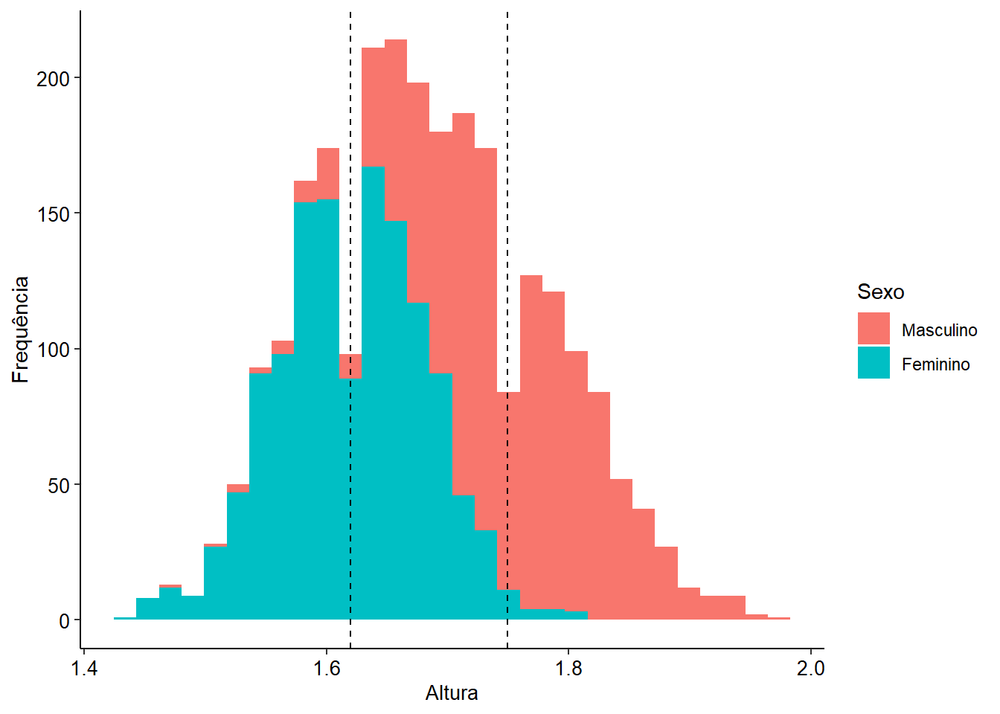
Outras medidas de posição
Também temos outras medidas que representam uma posição de uma distribuição de valores:
Decis: Divide a distribuição em 10 partes iguais. O 5º decil representa a mediana.
Quartil: Divide distribuição em quatro partes iguais. O Q2 representa a mediana.
Percentil: Divide a distribuição em 100 partes iguais. O percentil 50 representa a mediana.
Como todas essas medidas dividem o banco de dados em uma determinada porcentagem, o termo genérico para elas é quantil e utilizaremos a função quantile() para calculá-las.
# Cálculo de exemplo do primeiro decil, primeiro quartil e percentil 99
factor_saq |>
dplyr::group_by(sexo) |>
dplyr::summarise(primeiro_decil = quantile(altura, prob = .1), primeiro_quartil =quantile(altura, prob = .25), percentil_99 = quantile(altura, prob = .99)) |>
# Reporta os valores na forma de tabela para melhor visualização
knitr::kable()| sexo | primeiro_decil | primeiro_quartil | percentil_99 |
|---|---|---|---|
| Masculino | 1.66 | 1.70 | 1.92 |
| Feminino | 1.54 | 1.58 | 1.75 |
Medidas de dispersão
Medidas de dispersão são valores que indicam o quanto os dados de uma distribuição estão espalhados ou variam em torno de uma medida central (como a média).
Amplitude: É a diferença entre o maior e o menor valor de um conjunto de dados.
Variância: \(\sigma^2 = \frac{\Sigma(xi-\mu)^2}{N}\)
Desvio padrão: \(\sigma = \sqrt{\sigma^2}\)
Distância interquartil: \(DIQ = Q3 - Q1\)
# Vamos calcular as métricas acima para o nosso a altura dos indivíduos em nosso banco de dados
factor_saq |>
dplyr::group_by(sexo) |>
dplyr::summarise(variancia = var(altura), desvio_padrao = sd(altura), amplitude = max(altura) - min(altura), distancia_interquartil = IQR(altura)) |>
# Reporta os valores na forma de tabela para melhor visualização
knitr::kable()| sexo | variancia | desvio_padrao | amplitude | distancia_interquartil |
|---|---|---|---|---|
| Masculino | 0.0053669 | 0.0732594 | 0.50 | 0.10 |
| Feminino | 0.0037084 | 0.0608964 | 0.37 | 0.08 |
O gráfico de densidade permite uma boa visualização da dispersão dos dados.
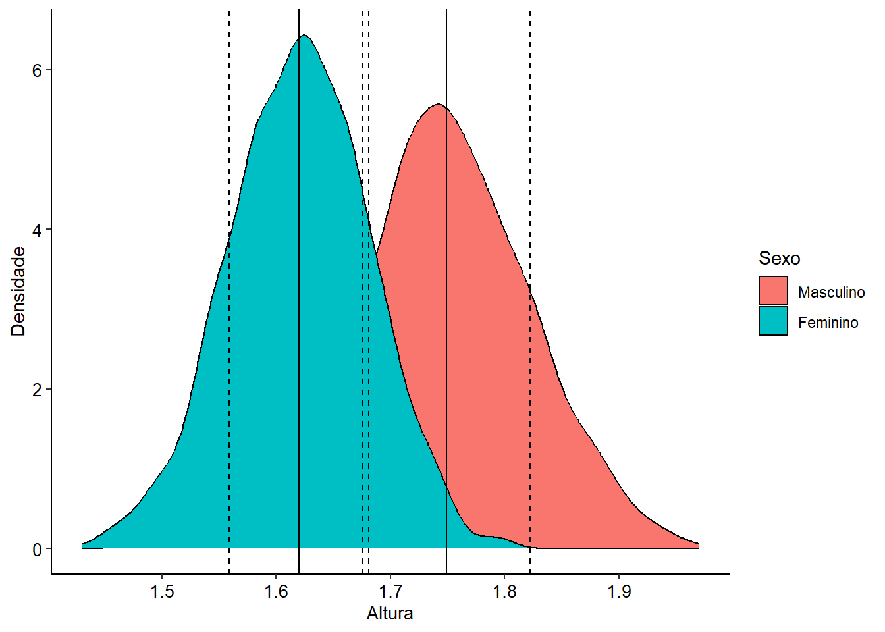
Descrevendo variáveis categóricas
Tabela de contingência e gráfico em barras
Para variáveis categóricas, costuma-se trabalhar com a frequência de cada categoria. Uma boa forma de descrevê-las é pela tabela de contingência:
# Cria tabela de contingência para a variável raca_etnia
factor_saq |>
dplyr::group_by(sexo) |>
dplyr::pull(raca_etnia) |>
base::table() |>
knitr::kable(col.names = c("Raça/Etnia", "Frequência"))| Raça/Etnia | Frequência |
|---|---|
| Branca | 1096 |
| Preta | 258 |
| Parda | 1217 |
Também podemos utilizar um gráfico de barras6 para representar a frequência de cada categoria. Veja o exemplo abaixo, que mostra a quantidade de pessoas em cada categoria de Raça/Etnia, por sexo.
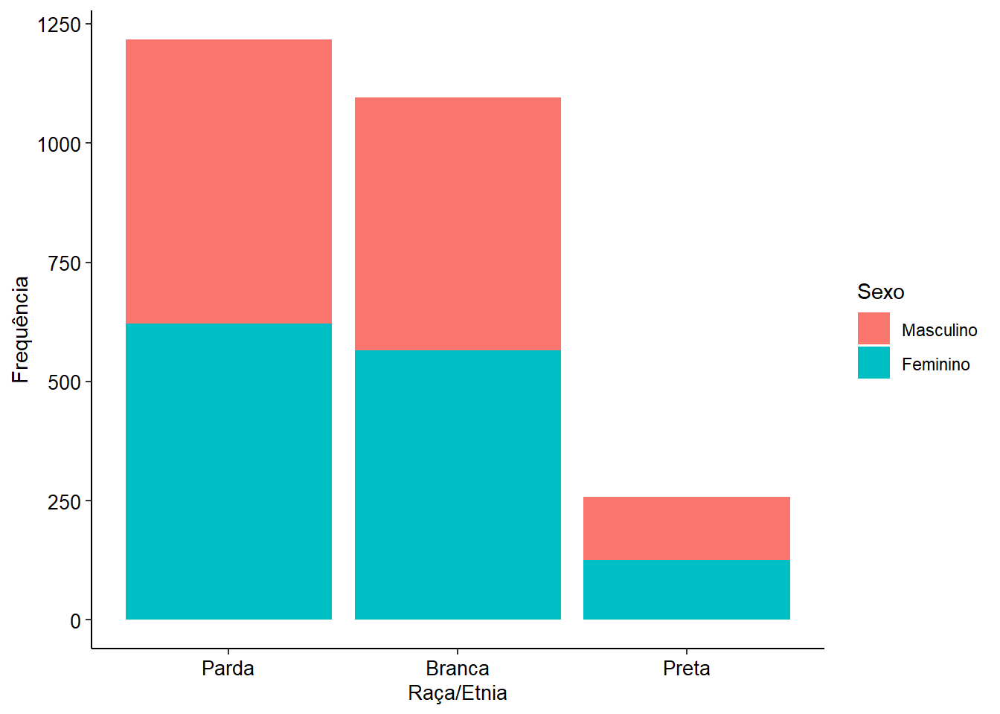
Quando pensamos nas respostas do questinário RAQ-23, poderíamos analisá-lo em forma de gráfico de barras, como fizemos com a variável Raça/Etnia:
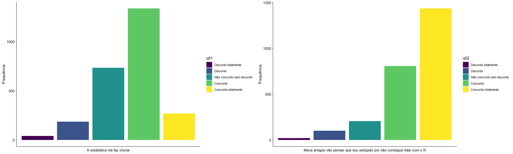
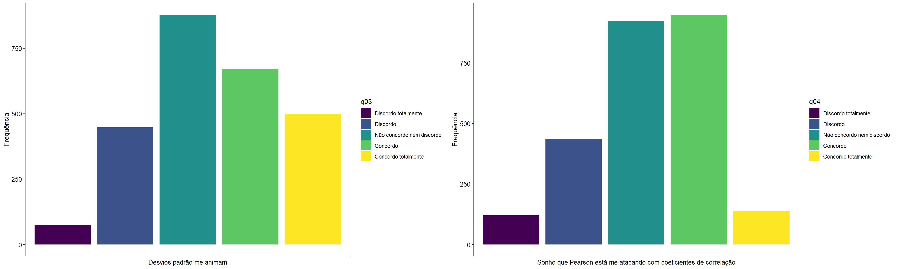
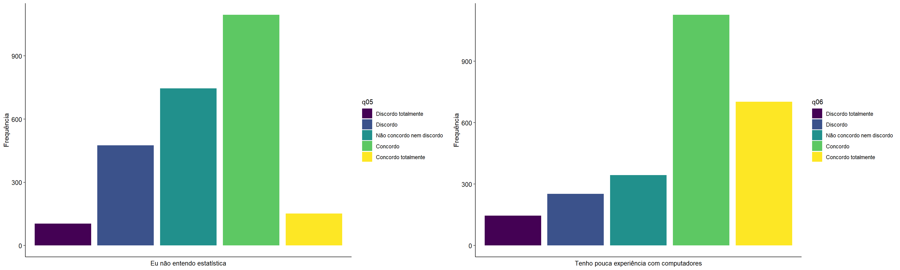
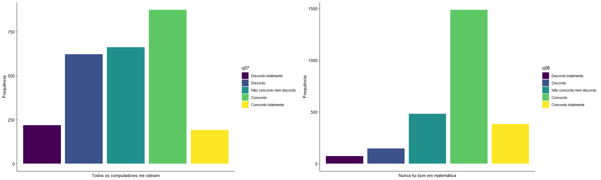
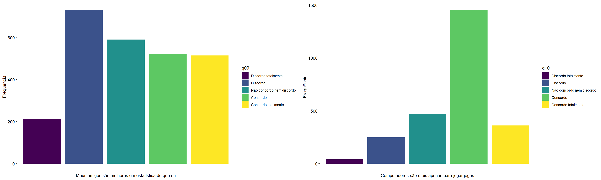
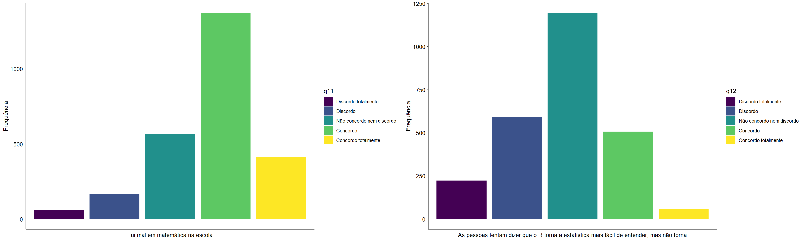
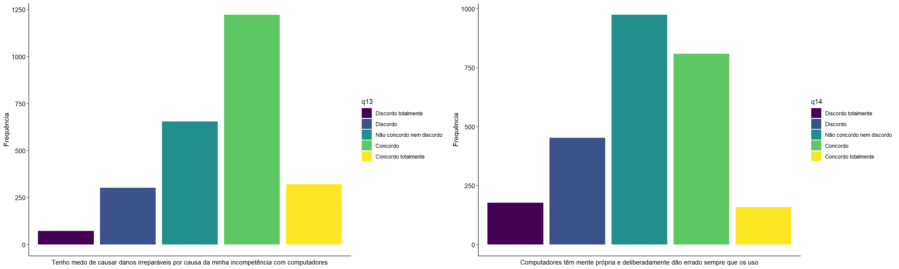
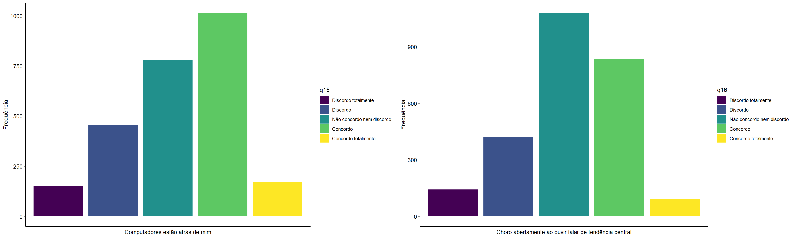
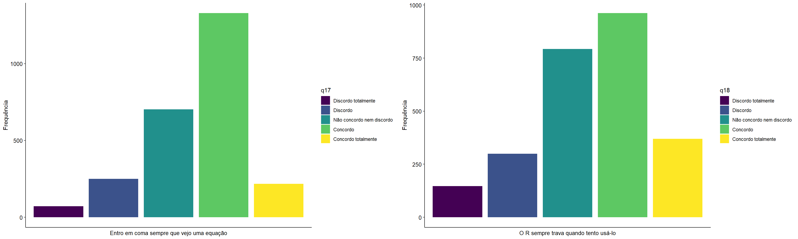
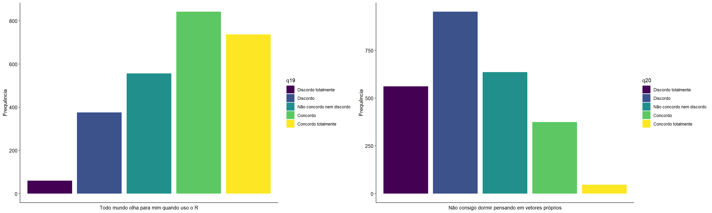
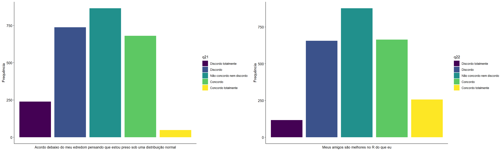
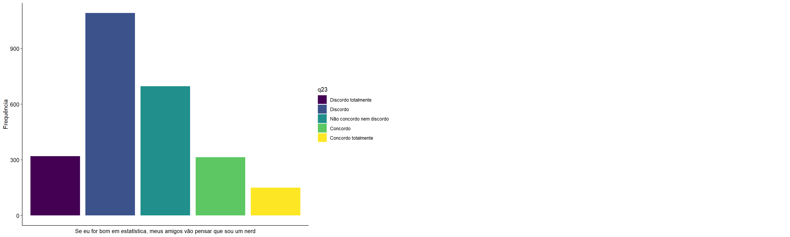
Essa é uma boa forma de olhar os itens, pois temos uma noção geral da quantidade de cada resposta para cada um deles. Entretanto, caso quiséssemos medir a ansiedade em relação ao R para cada indivíduo, seria interessante arranjar uma pontuação para o questionário, representativa desse construto ansiedade. Para isso, podemos fazer o somatório da pontuação de cada item, como fizemos na última aula (devemos antes converter as variáveis para valores numéricos).
# Cria nova coluna representando pontuação para o questionário
factor_saq <- factor_saq |>
mutate(across(q01:q23, as.numeric)) |>
rowwise() |>
mutate(ansiedade_r = sum(c(q01,q02,q03,q04,q05,q07,q07,q08,q09,q10,q11,q12,q13,q14,q15,q16,q17,q18,q19,q20,q21,q22,q23)))Com a nova coluna, podemos agora ver as estatísticas descritivas e fazer um gráfico de densidade, o nosso somatório representa uma variável numérica.
# Estatísticas descritivas para a pontuação do questionário
factor_saq |>
group_by() |>
dplyr::summarise(media = mean(ansiedade_r), desvio_padrao = sd(ansiedade_r), maior_pontuação = max(ansiedade_r), menor_pontuação = min(ansiedade_r), distancia_interquartil = IQR(ansiedade_r)) |>
knitr::kable()| media | desvio_padrao | maior_pontuação | menor_pontuação | distancia_interquartil |
|---|---|---|---|---|
| 75.8662 | 9.151513 | 105 | 34 | 12 |
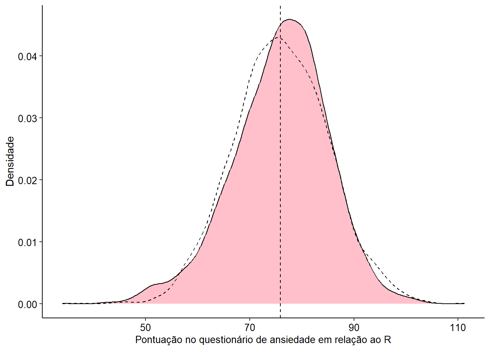
A linnha pontilhada representa uma distribuição normal com mesma média e desvio padrão. A sobreposição mostra que a distribuição dos somatórios da pontuação dos itens assemelha-se a uma distribuição normal.
Nesse capítulo vimos um pouco sobre estatística descritiva. Alguns tópicos não foram abordados, mas espero que tenham conseguido ter uma noção geral sobre o tema. Na próxima aula, veremos sobre visualização de dados e estatística inferencial.
Footnotes
O questionário foi modificado para conter outras variáveis e para o contexto do R, visto que foi originalmente desenvolvido para o SPSS. Os dados adicionados não representam informações reais.↩︎
Pode ser utilizado o tipo
double, desde que os valores da variável permaneçam como inteiros.↩︎Funções anônimas são funções que não possuem um nome definido. Geralmente as utilizamos em operações curtas, quando não pretendemos reutilizá-las em outro momento do código.↩︎
Quando manipulamos dados com rótulos, os rótulos são perdidos. Entretanto, a função
sjlabelled::get_labels()retorna o valor dos níveis dos fatores, por isso continua funcionando nessa ocasião. Deixe sempre uma cópia do banco original, pois nela poderá se referir aos rótulos.↩︎A função
summarise()realizar automaticamente oungroup(). Caso não a utilize, é necessário desagrupar o banco de dados com essa função após utilizar ogroup_by(), para que as operações não continuem sendo realizadas por grupo.↩︎Apesar de parecidos, o gráfico de barras é um tipo de representação distinta do histograma. Enquanto o último é utilizado para representar dados numéricos, o gráfico de barras representa a frequência de dados categóricos.↩︎